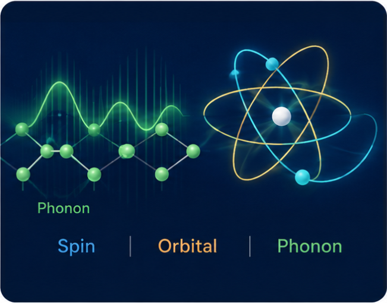
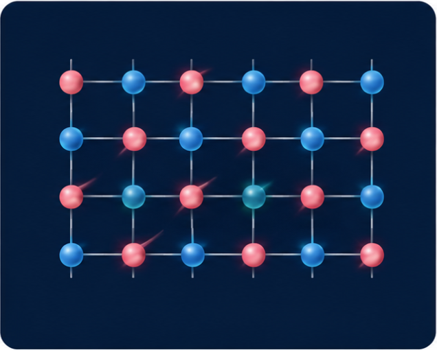
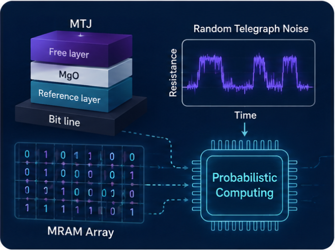

From Fundamentals to Emerging Electronic Systems
We combine nanoscale transport, emerging magnetic materials, and magnetic-device engineering to develop new concepts for future electronics and computing.

Spin, Orbital & Phonon Transport for Nanoelectronics
We investigate the generation, transport and interconversion of spin, orbital and phonon angular momentum in nanoscale materials and heterostructures, and exploit these channels to realize efficient electronic functionalities.
- Spin transport and spin-orbit torque
- Orbital transport and orbitronics
- Phonon-mediated angular-momentum transport
- Spin–orbital–phonon interconversion for nanoelectronics

Antiferromagnets, Altermagnets & Emerging Materials for Spintronics
We explore antiferromagnets, altermagnets and other emerging magnetic materials as platforms for new spintronic devices, with emphasis on material properties and transport responses that can be translated into practical device operation.
- Antiferromagnetic and altermagnetic spintronics
- Emerging magnetic materials and heterostructures
- Epitaxial thin-film growth and interface engineering
- Electrical manipulation and detection of magnetic order

MRAM, Probabilistic Computing & Process-in-Memory
We develop magnetic tunnel-junction devices and MRAM-based computing concepts that exploit nonvolatility, stochastic switching and in-memory operation for next-generation information-processing architectures.
- Spin-orbit-torque and advanced MRAM
- Stochastic MTJs and random-telegraph-noise devices
- Probabilistic computing and p-bits
- Process-in-memory and neuromorphic computing